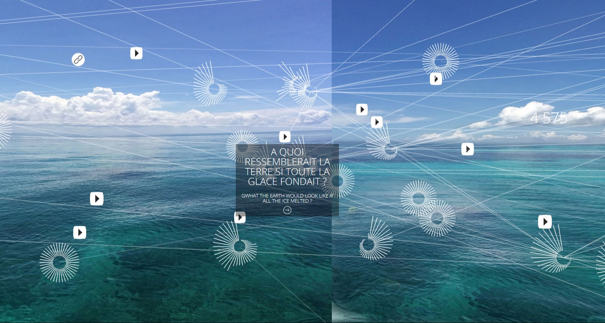
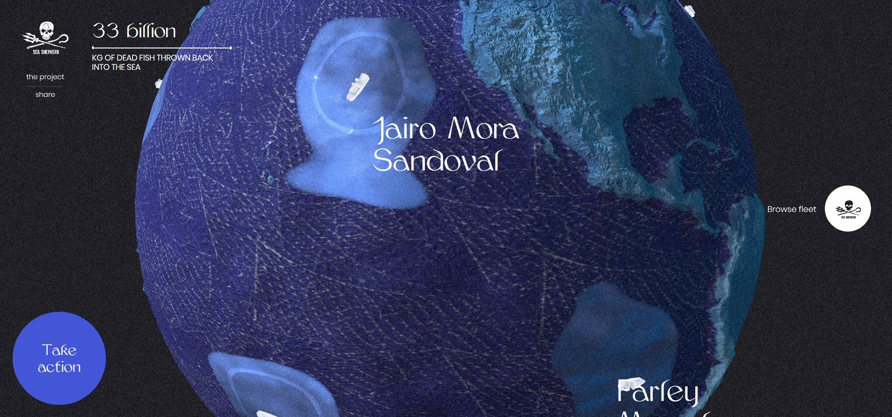
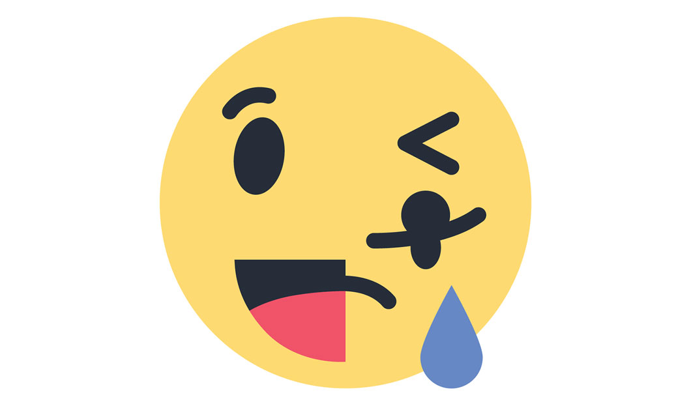
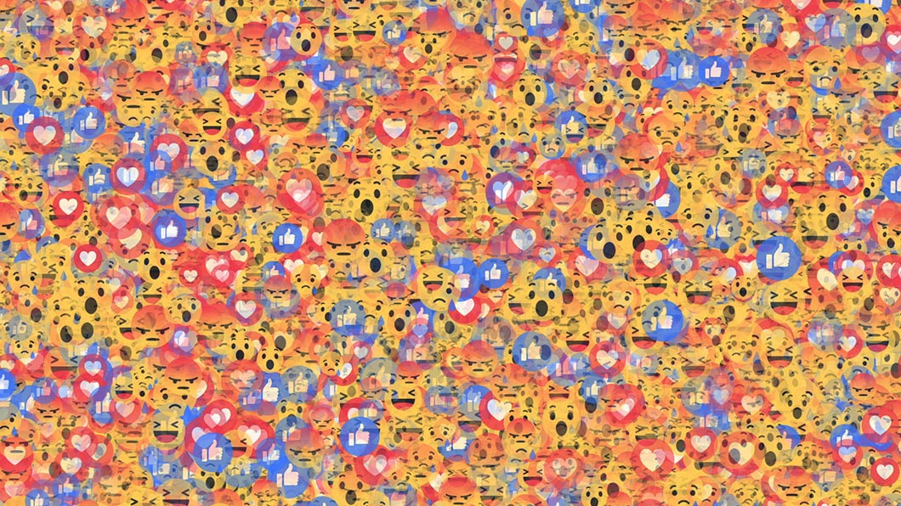

DEVOIR 1
Introduction personnelle
Passionnée d’arts visuels, je m'intéresse notamment à l'art écologique. Je n'ai aucune expérience en web. J’aimerais me familiariser avec les bases pour la création d’une page web simple et interactive. Voici deux projets qui m’inspirent autant par leur forme que par leur sujet : Anthropocean d’Olga Kisseleva et No-fishing.net de Makemepulse.

Anthropocean, 2016, Olga Kisseleva

No-fishing, Makemepulse (pour une campagne de Sea Shepherd)
Réflexion
J’aime beaucoup le travail engagé et réflexif de l’artiste Ben Grosser, qui oscille entre art web et action politique, notamment dans son œuvre Go Rando. Cette extension vient modifier le code de FaceBook pour afficher aléatoirement une « réaction » parmi les six proposées (like, triste, haha, etc.) et ainsi brouiller l’algorithme qui analyse nos comportements émotionnels selon les publications. Son œuvre nous interroge à la fois sur nos pratiques et sur celles de ce réseau social qui tend à manipuler nos contenus : bien ou mal ? A chacun de se faire son opinion. En tout cas, la première étape consiste à prendre conscience du fonctionnement algorithmique.

Logo Go Rando

Illustration du trouble généré au près de l'algorithme de FaceBook (images issues de bengrosser.com)
© ClémentineB.